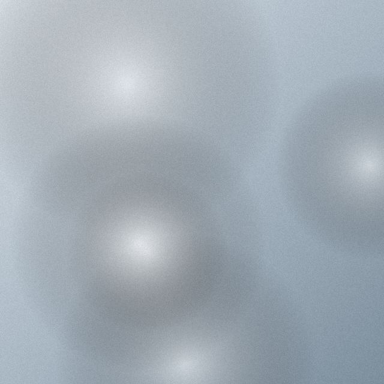
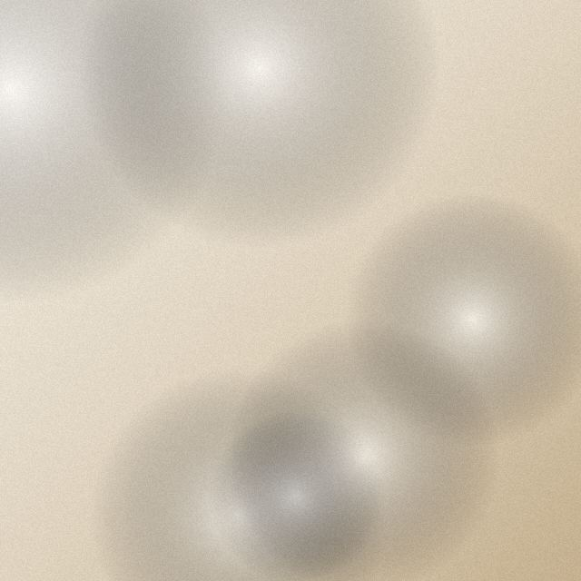
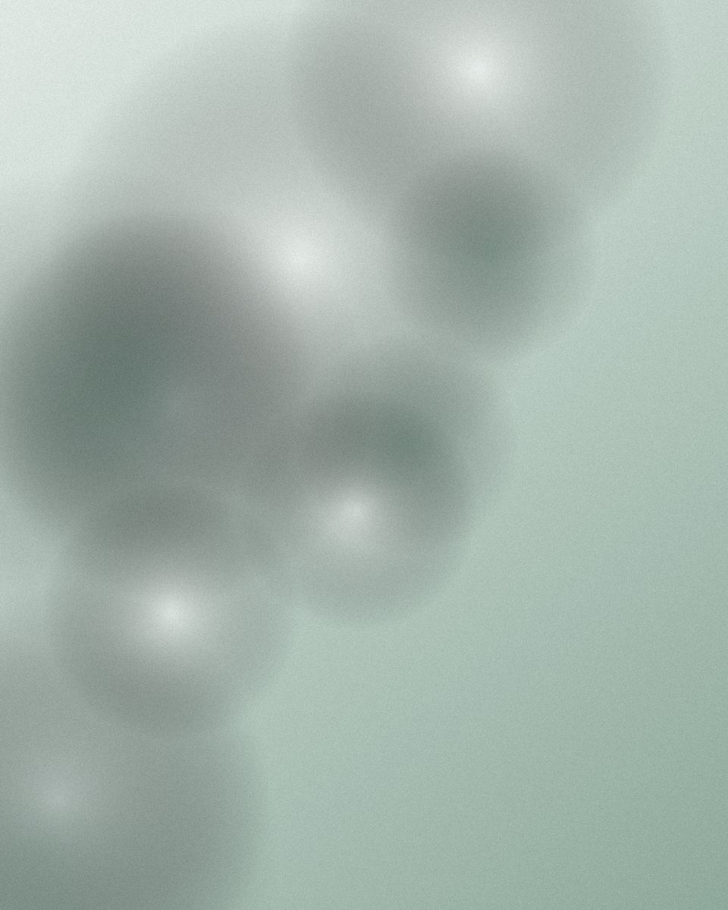
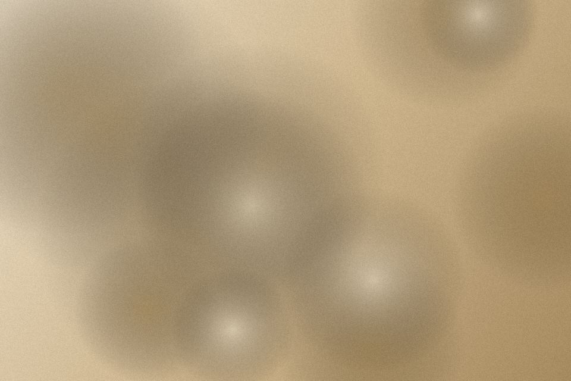
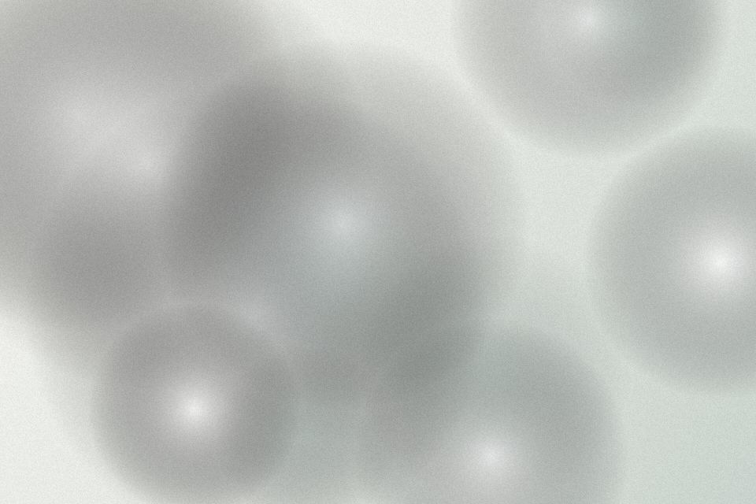
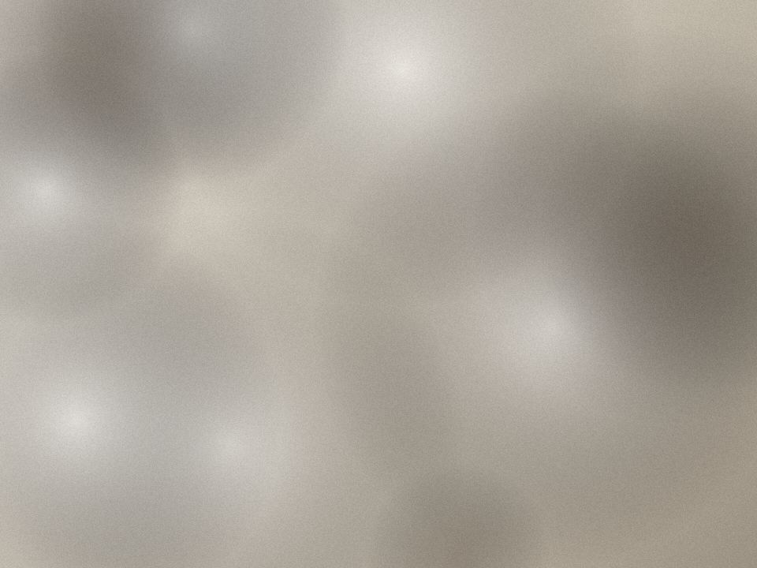

Pembersihan karang
Rp 350.000 · 30 menit
Klinik gigi di Jl. Riau, Bandung. Rincian biaya kami tulis sebelum alat menyentuh gigi Anda, jadi tidak ada kejutan di kasir.
Pembersihan karang gigi Rp 350.000

Rp 350.000 sekali datang
Bayar setelah selesai. Tindakan tambahan hanya dengan persetujuan Anda, dengan harga tertulis.
Setiap janji di halaman ini bisa Anda periksa sebelum datang.
Rata-rata waktu di kursi untuk pembersihan karang adalah 27 menit, dihitung dari 412 kunjungan Januari sampai September 2026.
drg. Rina Hapsari, STR 1234567890123456, berlaku sampai 2029. Nomor ini bisa dicek di situs KKI.


Rp 350.000 · 30 menit


mulai Rp 400.000 · 45 menit

Rp 150.000 · pemeriksaan saja
Kirim tanggal yang Anda mau. Kami balas dalam 10 menit pada jam buka.
Ruang tunggu hanya untuk satu pasien, jadi Anda tidak menunggu bersama orang lain.
Dokter menunjukkan foto gigi Anda dan menulis rencana serta harganya. Anda boleh berhenti di sini.
Pembersihan sekitar 30 menit. Anda membayar setelah selesai, sesuai yang tertulis.
“Saya takut ke dokter gigi sejak kecil. Di sini harganya ditulis dulu, dan dokternya berhenti setiap kali saya angkat tangan.”
Sebagian besar pasien merasa ngilu ringan. Kalau gigi Anda sensitif, kami pakai gel pengurang ngilu tanpa biaya tambahan.
Belum. Kami memberi kuitansi rinci untuk klaim asuransi swasta.
Boleh, untuk anak mulai usia 6 tahun. Kunjungan pertama anak hanya untuk berkenalan dengan kursi dan alat.
Senin sampai Sabtu, 09.00 sampai 20.00. Balasan dalam 10 menit pada jam buka.